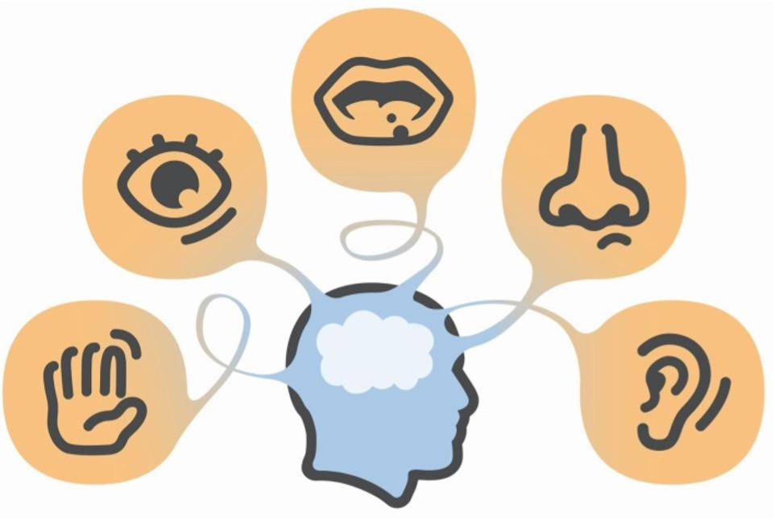
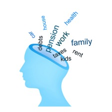
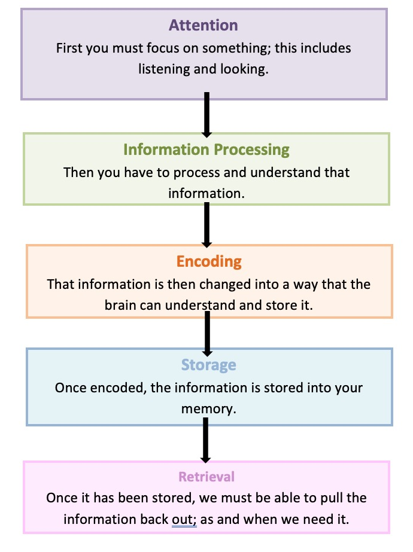

2 Overview of Memory
2.1 Introduction
In the last session, we introduced different cognitive abilities. We also began to think about our own memory difficulties, when these started and any strategies we have tried to overcome them. Today, we’re going to focus in on memory.
When we talk about ‘memory’ or we say ‘my memory’s getting really bad’, it’s easy to think of ‘memory’ as being one, singular function. However, in reality it’s much more complex.
Today we’ll start off by looking at the memory process and linking it to the other cognitive abilities we have been introduced to. We’ll also be talking about what memory difficulties we have noticed ourselves, along with what aspects of memory we find work better for us. This can help us to identify where in the process our main difficulties are. In turn, we’re then able to come up with more effective and targeted strategies to support our memory.
The term memory is used to describe the process through which people acquire information through their senses (sight, hearing, taste, smell), store and recall that information. There are lots of different types of memory which require many thinking abilities. We will be talking about these later in the session.
The image below shows the different types of abilities:

2.2 Mindfulness
As we said in the last session, when you come into each session there may be lots of things on your mind. You might have thoughts about what you’ve been doing, what you need to do, maybe some expectations or perhaps worries about what the group itself will be like. Our minds often wander and life is sometimes filled with stresses or worries.
To start off today, and at the beginning of our future sessions, we will carry out a brief breathing exercise. The aim of this is just to help us be more present ‘in the moment’, and give us some time to become more aware of our thoughts, feelings and any physical sensations.
As we’ll see later in the course, this can also support our cognitive functioning and help our memory along with promoting overall well-being. If you have difficulty focusing on the breath (e.g. due to breathing difficulties) then go at a pace that feels comfortable to you, stop the meditation or focus on another part of your body, such as your feet.
2.3 Memory and Mindfulness
As we’ve said before, if we’re distracted or trying to pay attention to lots of different things at once it can result in that information not going in properly.
Have you ever arrived at a destination after a drive or a walk completely unaware of how you got there? This is what we call being on ‘automatic pilot’ and often happens because we’re so wrapped up in thoughts about the past and the future that we’re not paying attention to what’s happening around us in the present moment.

How does this Impact on Our Memory?
If we’re paying attention to these thoughts about the past and the future it means that we’re not giving our full attention to what’s happening around us now. As we said before, this can impact on our memory because it means that important information might not be entering or being processed within our minds. We also end up using up our cognitive resources on this rather than learning new information.
What is Mindfulness?
Mindfulness is about paying attention in a particular way: on purpose, in the present moment and non-judgementally. It is used to help people improve their wellbeing by helping people to defuse from these thoughts and improve their attention. By just noticing and paying attention to what’s happening now, mindfulness helps us to distance ourselves from our thoughts and be more present. Below are some of the core principles of mindfulness: - The ‘being’ mode: Mindfulness says that often we are so caught up in these thoughts about the past and future (the ‘doing’ mode) that we end up not paying attention to what’s happening around us now (the ‘being’ mode). - Self-compassion: We often have so much compassion and empathy for others that we forget to have the same for ourselves. Mindfulness is about extending some of this kindness to ourselves.
Mindfulness can have a positive impact on lots of areas of our lives including: - Emotional wellbeing: becoming more aware of our unhelpful thoughts and feelings and distancing ourselves from these. This can help us to realise that thoughts are just that thoughts! We will talk more about this in sessions 5 and 6. - Physical wellbeing: Becoming more aware of our bodies can be very useful for managing stress and reducing the release of cortisols. This is because we’re often not even aware of the impact of stress on our bodies. We will also discuss this in more detail in another session . - Cognitive functioning: Mindfulness can be used to help improve our attention. By becoming aware of our thoughts, feelings and physical sensations we can bring our attention back to the present moment and reduce how much time we spend in automatic pilot. This can actually also help us to train our attention and help us to process and encode information effectively.
2.4 How does our Memory Work?
The process of learning and remembering is quite complex and requires lots of different abilities and skills. This includes attention, information processing, encoding, storage and retrieval.
The diagram below illustrates part of this process:

- I find it hard to do more than one thing at a time like writing a message while talking on the phone.
- My mind often wanders when I read or watch TV. I’ll get to the end of a programme or page and have no idea what I read or watched.
- I start doing something but then get distracted and start doing something else. Then I can’t remember what I was meant to be doing.
If the memory process is interrupted or affected at any point it can impact on your ability to recall information.
For example, if someone’s having difficulty with their attention they might think they’re forgetting that information when in fact it’s not entering their minds in the first place.
If someone’s experiencing reduced speed of information processing they might not remember because the information isn’t being processed properly.
Alternatively, information might be encoded in their memory but they could be having difficulty retrieving that information.
2.5 Types of Memory
For the purpose of this group we will be splitting memory into the types listed below. But please be aware that there are lots of other ways of dividing memory into different types.
- Working Memory: Is your ability to temporarily hold information while manipulating it in your mind. An example of this is mental arithmetic.
- Immediate Memory or Short-term Memory: is your ability to remember information for a few seconds or minutes such as remembering a phone number for long enough to dial it.
- Delayed or long-term Memory: refers to your memory for information over longer periods of time. For example your ability to remember things from years ago).
- Visual Memory: involves things that you have seen such as faces, objects and pictures.
- Verbal Memory: is your memory for things you’ve heard or read.
- Prospective Memory: is your ability to remember to do something such as brush your teeth or go to a meeting.
- Autobiographical Memory: refers to your memory for things that have happened in your life such as where you went to school.
- Procedural Memory: is a type of long term memory of how to perform different actions or skills like walking, talking or eating. These types of memories are so ingrained they usually become automatic.
- I can remember things that people said years ago but I can’t seem to remember what people said or what happened yesterday
- I’m able to recognise people’s faces but I find it hard to remember their names.
- I can never seem to remember my appointments.
- I find it hard to remember what I just did, even if it was two minutes ago.
2.6 Why do People have Memory Difficulties?
Difficulty recalling information can be caused by a number of things. This includes:
- A head injury or other injury to the brain.
- Some conditions such as epilepsy.
- Neurological conditions such as Multiple Sclerosis or Alzheimer’s disease.
- Stroke.
- Shortage of oxygen to the brain, for example because of a heart attack.
- Infections of the brain such as encephalitis.
- Use of substances like alcohol and drugs.
- Some medications.
- Stress.
- Low mood or anxiety.
- A difficult experience like a bereavement or stressful life event.
- Physical difficulties such as hearing loss or difficulties with vision.
- Some people notice difficulty recalling information as they get older.
- Feeling tired or fatigued.
- Poor diet and routine.
2.7 How are People with Memory Difficulties affected?
The impact of memory difficulties can vary from person to person. We will discuss some aspects of this later in the course. Below are some examples of how memory difficulties can affect people:
- Our mood or emotions. For example, some people might feel anxious, frustrated or low because of their difficulties.
- Our relationships – sometimes it can put strain on our relationships with friends or family.
- It might make us feel less motivated to do the things we need to do or enjoy in life.
- We might lose confidence to try new things.